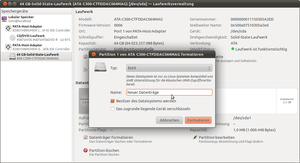

Formatieren
Dieser Artikel wurde für die folgenden Ubuntu-Versionen getestet:
Dieser Artikel ist größtenteils für alle Ubuntu-Versionen gültig.
Zum Verständnis dieses Artikels sind folgende Seiten hilfreich:
Beim "Formatieren" eines Datenträgers wird dieser mit einem Dateisystem versehen. Es wird also festgelegt, mit welcher Struktur die Daten abgelegt werden. Vor dem Formatieren muss man in der Regel eine Partition anlegen, die anschließend formatiert wird. Dabei kann natürlich der Datenträger auch nur mit einer einzigen Partition versehen werden (wie z.B. bei USB-Sticks üblich).
Viele Datenträger werden bereits formatiert (und damit auch partitioniert) ausgeliefert, z.B. USB-Sticks und Speicherkarten. Festplatten müssen in der Regel noch formatiert (und partitioniert) werden, sofern nicht schon ein Betriebssystem vorinstalliert war oder ist.
Manchmal kann es aber auch notwendig sein, Partitionen nachträglich nochmals zu formatieren. Mögliche Gründe sind, dass man z.B. einen USB-Stick mit einem anderen Dateisystem versehen will, oder dass man einfach alle Daten auf einer Partition löschen will.
Hinweis:
Beim Formatieren einer bestehenden Partition werden in der Regel die Daten nicht wirklich gelöscht, sondern "nur" die internen Tabellen des Dateisystems, in denen die Position der Daten vermerkt ist, überschrieben. Auch wenn das Retten von Daten von einer formatierten Partition nicht trivial ist, ist das Formatieren keine wirksame Methode zum endgültigen Löschen von sensiblen Daten. Hierzu gibt es bessere und wirksamere Werkzeuge. Hat man versehentlich eine Partition formatiert, hilft evtl. der Artikel Datenrettung.
Für den Wechsel der Linux-Dateisysteme von ext2 nach ext3 und auch von ext3 nach ext4 muss man die Partition nicht neu formatieren. Weitere Hinweise findet man unter Links.
Bei der Installation eines Betriebssystems wird in der Regel der entsprechende Datenträger bzw. die Partition auch formatiert. Da dieser Vorgang dann aber zumeist mit der Partitionierung einhergeht, ist es nicht immer offensichtlich.
Experten-Info:
ReiserFS Support wurde ab Ubuntu 13.10 aus dem Installer entfernt  . Wer dennoch Ubuntu direkt auf eine mit ReiserFS formatierte Partition installieren möchte, kann z.B. Ubuntu 12.04 als Minimalinstallation ausführen und dann zur gewünschten höheren LTS-Variante aktualisieren.
. Wer dennoch Ubuntu direkt auf eine mit ReiserFS formatierte Partition installieren möchte, kann z.B. Ubuntu 12.04 als Minimalinstallation ausführen und dann zur gewünschten höheren LTS-Variante aktualisieren.
Installation¶
In Ubuntu im Regelfall vorinstalliert ist die GNOME Laufwerksverwaltung. Jedoch sind je nachdem, welches Dateisystem man erzeugen (formatieren) möchte, unterschiedliche Hilfsprogramme notwendig, die in verschiedenen Paketen enthalten sind [1]:
e2fsprogs (für ext2, ext3 und ext4-Dateisysteme)
reiserfsprogs (für ReiserFS)
dosfstools (für Windows-/MS-DOS-FAT-Dateisysteme)
 mit apturl
mit apturl
Paketliste zum Kopieren:
sudo apt-get install e2fsprogs reiserfsprogs dosfstools
sudo aptitude install e2fsprogs reiserfsprogs dosfstools
Alle drei Pakete sind bei Ubuntu in der Regel in der Grundinstallation enthalten.
Es gibt eine Reihe von weiteren Paketen für andere Dateisysteme, wie z.B.
ntfsprogs (für das Windows-NTFS-Dateisystem, nur bis Natty Narwhal 11.04. Danach Bestandteil vom Paket ntfs-3g.)
xfsprogs (für das Dateisystem XFS)
jfsutils (für das Dateisystem JFS)
btrfs-tools (universe, für das Btrfs-Dateisystem)
mit apturl
Paketliste zum Kopieren:
sudo apt-get install ntfsprogs xfsprogs jfsutils btrfs-tools
sudo aptitude install ntfsprogs xfsprogs jfsutils btrfs-tools
und weitere (unter Linux) weniger gängige Dateisysteme. Die Paketnamen haben, wie man sieht, immer eine ähnliche Struktur, d.h. sie beginnen mit dem Namen des Dateisystems, gefolgt von der Endung "progs" oder auch "utils" und "tools". Somit sollte das Finden von weiteren Paketen via Suchfunktion der Paketverwaltung recht einfach sein.
Nutzung¶
Möchte man eine Partition formatieren, so muss diese immer ausgehängt sein, sonst ist die Formatierung nicht möglich. Dies gilt sowohl für interne als auch für externe Datenträger. Speziell bei externen Datenträgern sollte man aber beachten, dass diese nicht "ausgeworfen" werden dürfen.
Bevor man eine Partition formatiert, sollte man sich natürlich Gedanken über das Dateisystem gemacht haben. Linux kann z.B. von sehr vielen Dateisystemen lesen, aber nicht unbedingt auf alle schreiben. Des Weiteren eignen sich nicht alle Dateisysteme für eine (mögliche) Installation von Linux. Weitere Informationen findet man im Artikel Dateisystem.
Grafische Werkzeuge¶
Die gängigen Dateimanager bieten keine Möglichkeit zur Formatierung. Diese erfolgt durch Programme wie die Laufwerksverwaltung unter GNOME oder GParted.
GNOME Laufwerksverwaltung¶

In Ubuntu ist die Laufwerksverwaltung standardmäßig installiert. Ansonsten kann sie über das folgende Paket nachinstalliert werden [1]:
gnome-disk-utility
mit apturl
Paketliste zum Kopieren:
sudo apt-get install gnome-disk-utility
sudo aptitude install gnome-disk-utility
Konkrete Details zur Nutzung des Programms sind dem ausführlichen Artikel Laufwerksverwaltung zu entnehmen.
GParted¶
Bei diesem Programm handelt es sich zwar um einen Partitions-Editor, man kann damit aber auch "nur" formatieren. Die Installation und Nutzung als Partitionierungswerkzeug ist im Artikel GParted beschrieben. Die folgenden Informationen beziehen sich auf das dort nicht beschriebene Formatieren.
Dazu wählt man die gewünschte Partition auf dem Datenträger, geht in den Menüpunkt "Partition" oder klickt mit rechts  auf die Partition und wählt "Formatieren als ...". Im folgenden Menü erscheinen alle verfügbaren Dateisysteme. Hat man ein Dateisystem gewählt, kann man die Operation über den entsprechenden Menüpunkt ausführen.
auf die Partition und wählt "Formatieren als ...". Im folgenden Menü erscheinen alle verfügbaren Dateisysteme. Hat man ein Dateisystem gewählt, kann man die Operation über den entsprechenden Menüpunkt ausführen.
Erscheint das Wunsch-Dateisystem nicht in der Liste oder ist ausgegraut, so sind die notwendigen Hilfsprogramme nicht installiert. GParted bringt keine eigenen Werkzeuge mit, sondern greift auf die oben unter Installation beschriebenen Pakete zurück.
KDE-Partitionmanger¶
Für KDE gibt es mit Partitionmanager ebenfalls ein Partitionierungswerkzeug mit Formatierungsoptionen. Über das Kontextmenü () der gewünschten Partition und Auswahl von "Eigenschaften" erscheint ein Fenster in dem man das gewünschte Dateisystem auswählen kann. Nach Klick auf "OK" werden die Einstellungen vorgemerkt. Die Formatierung wird anschließend nach Klick auf "Anwenden" auf den Datenträger geschrieben.
Kommandozeile¶
Hinweis:
Das Vorgehen kann je nach Partitionierungsprogramm und dessen Version leicht variieren, das Schema ist aber immer das Gleiche.
Es gibt für jedes Dateisystem ein eigenes Kommando für die Formatierung. Die Befehle sind aber alle nach dem gleichen Schema benannt: sie beginnen mit mkfs., gefolgt vom Namen des Dateisystems. Also z.B. mkfs.ext3 für ext3, mkfs.ntfs für NTFS usw. Es gibt auch den Befehl mkfs (ohne Endung), der aber unter Ubuntu auf mkfs.ext3 hinweist.
Die Syntax ist für alle mkfs-Befehle gleich. Beispiel:
mkfs.ext3 OPTIONEN DEVICE
ext3 kann dabei natürlich auch durch die anderen Dateisysteme ersetzt werden. Die Angabe des DEVICE ist zwingend. So würde z.B. der Befehl
mkfs.reiserfs /dev/sda2
die 2. Partition der 1. Festplatte mit ReiserFS formatieren.
Die Syntax für xfs auf einem LVM wäre dann
mkfs.xfs /dev/mapper/data-vault
Achtung!
Ein häufiger Fehler ist die Verwendung des Befehls ohne die Angabe der erforderlichen Partition wie im folgenden Beispiel:
mkfs.ext3 /dev/sda
Dann hilft anschließend nur noch eine Wiederherstellung aus einer Datensicherung weiter (siehe auch Datenrettung).
In der Regel benötigt man keine weiteren Optionen, da diese sinnvoll voreingestellt sind. Eine Ausnahme ist mkfs.vfat (siehe unten). Die Optionen können von Dateisystem zu Dateisystem variieren, für weitere Informationen (zu Befehlen und Optionen) siehe die entsprechende Manpage.
mkfs.vfat¶
Beim Befehl mkfs.vfat kann es sinnvoll sein, zumindest die Option -F zu nutzen. Es gibt nämlich drei Arten des FAT-Dateisystem (FAT12, FAT16, FAT32), die sich in der maximalen Partitionsgröße unterscheiden, sonst aber strukturell identisch sind. Die maximalen Partitionsgrößen findet man im Artikel Dateisystem. Mit der Option -F, gefolgt von 12, 16 oder 32, gibt man die Art explizit vor. Ohne diese Option wählt mkfs.vfat automatisch die geeignete Größe.
Beispiel:
mkfs.vfat -F 32 /dev/sdb1
legt ein FAT32-Dateisystem auf der ersten Partition des Gerätes (Device) sdb an.
Disketten formatieren¶
Prinzipiell trifft das hier beschriebene Vorgehen auch auf Disketten zu. Für diese gibt es aber speziellere Hilfsprogramme, welche im Artikel Diskette beschrieben sind.
Links¶
Intern¶
Swap - Hinweise zum Anlegen und Formatieren einer Swap-Partition
dosfstools - Datenträger mit einem FAT bzw. MS-DOS Dateisystem formatieren
Notfall
 Was tun in Notfällen?
Was tun in Notfällen?
- Erstellt mit Inyoka
-
 2004 – 2017 ubuntuusers.de • Einige Rechte vorbehalten
2004 – 2017 ubuntuusers.de • Einige Rechte vorbehalten
Lizenz • Kontakt • Datenschutz • Impressum • Serverstatus -
Serverhousing gespendet von